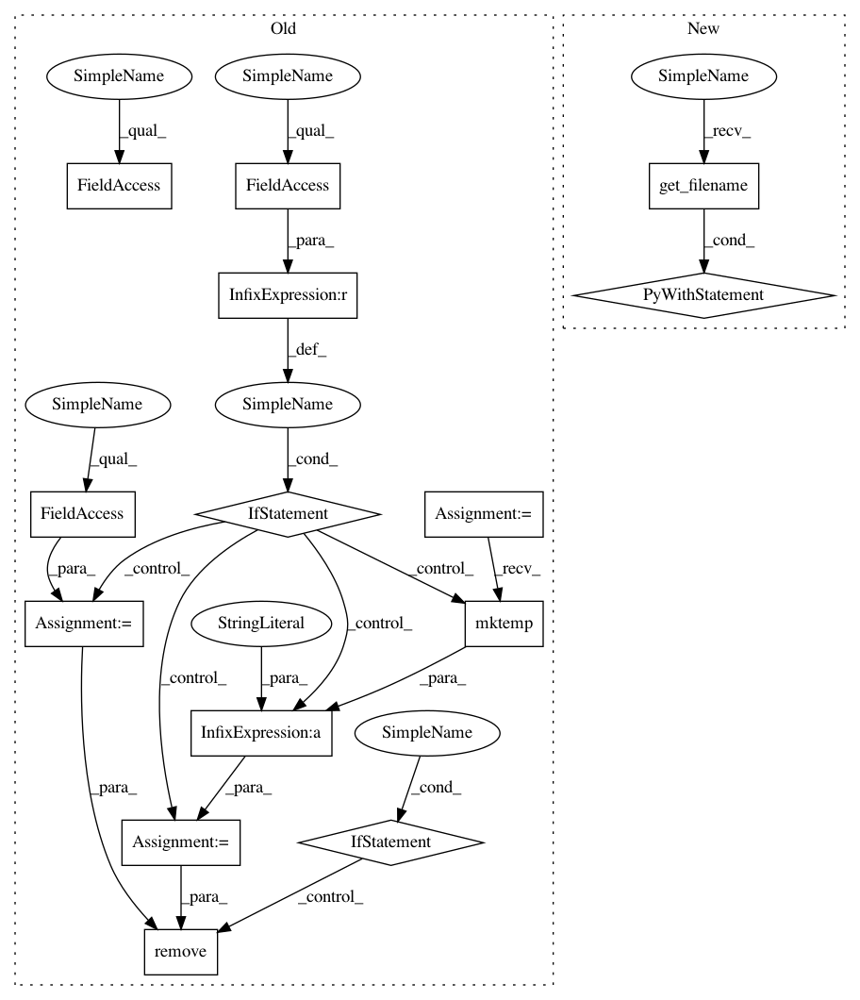

c3b334e73b33a046d912de419d8d9110dbce52e5,pliers/converters/api.py,SpeechRecognitionAPIConverter,_convert,#SpeechRecognitionAPIConverter#Any#,41
Before Change
def _convert(self, audio):
import speech_recognition as sr
if audio.filename is None:
file = tempfile.mktemp() + ".wav"
audio.clip.write_audiofile(file)
else:
file = audio.filename
with sr.AudioFile(file) as source:
clip = self.recognizer.record(source)
text = getattr(self.recognizer, self.recognize_method)(
clip, self.api_key)
if audio.filename is None:
os.remove(file)
return ComplexTextStim(text=text)
class WitTranscriptionConverter(SpeechRecognitionAPIConverter):
After Change
def _convert(self, audio):
import speech_recognition as sr
with audio.get_filename() as filename:
with sr.AudioFile(filename) as source:
clip = self.recognizer.record(source)
text = getattr(self.recognizer, self.recognize_method)(clip, self.api_key)
return ComplexTextStim(text=text)
In pattern: SUPERPATTERN
Frequency: 3
Non-data size: 14
Instances
Project Name: tyarkoni/pliers
Commit Name: c3b334e73b33a046d912de419d8d9110dbce52e5
Time: 2017-03-23
Author: quinten.mcnamara@gmail.com
File Name: pliers/converters/api.py
Class Name: SpeechRecognitionAPIConverter
Method Name: _convert
Project Name: tyarkoni/pliers
Commit Name: c3b334e73b33a046d912de419d8d9110dbce52e5
Time: 2017-03-23
Author: quinten.mcnamara@gmail.com
File Name: pliers/extractors/models.py
Class Name: TensorFlowInceptionV3Extractor
Method Name: _extract
Project Name: tyarkoni/pliers
Commit Name: c3b334e73b33a046d912de419d8d9110dbce52e5
Time: 2017-03-23
Author: quinten.mcnamara@gmail.com
File Name: pliers/extractors/api.py
Class Name: ClarifaiAPIExtractor
Method Name: _extract
Project Name: tyarkoni/pliers
Commit Name: c3b334e73b33a046d912de419d8d9110dbce52e5
Time: 2017-03-23
Author: quinten.mcnamara@gmail.com
File Name: pliers/converters/api.py
Class Name: SpeechRecognitionAPIConverter
Method Name: _convert